library(tidyverse)
library(lme4)
library(broom.mixed)
library(lmerTest)
library(patchwork)
library(ggdist)
library(effects)
library(gt)
library(parameters)
library(knitr)
library(nlmeU)
library(easystats)In this tutorial, you will learn what mixed effects linear models are, what situations they should be used in, and how to use them to analyze data in R.
Setup
Loading the data
For this tutorial we’ll be using a dataset included in the nlmeU package. This data comes from the Study of Structural Improvement (SII) Project, which aimed to assess match achievement scores for first and third graders in randomly selected classrooms at elementary schools across the US (Hill, Rowan, and Ball 2005). The dataset contains data from 1,190 first graders sampled from 312 classrooms in 107 schools.
# load the data from the nlmeU package
data(SIIdata)
# visualize information for the dataframe
str(SIIdata)'data.frame': 1190 obs. of 12 variables:
$ sex : Factor w/ 2 levels "M","F": 2 1 2 1 1 2 1 1 2 1 ...
$ minority: Factor w/ 2 levels "Mnrt=No","Mnrt=Yes": 2 2 2 2 2 2 2 2 2 2 ...
$ mathkind: int 448 460 511 449 425 450 452 443 422 480 ...
$ mathgain: int 32 109 56 83 53 65 51 66 88 -7 ...
$ ses : num 0.46 -0.27 -0.03 -0.38 -0.03 0.76 -0.03 0.2 0.64 0.13 ...
$ yearstea: num 1 1 1 2 2 2 2 2 2 2 ...
$ mathknow: num NA NA NA -0.11 -0.11 -0.11 -0.11 -0.11 -0.11 -0.11 ...
$ housepov: num 0.082 0.082 0.082 0.082 0.082 0.082 0.082 0.082 0.082 0.082 ...
$ mathprep: num 2 2 2 3.25 3.25 3.25 3.25 3.25 3.25 3.25 ...
$ classid : Factor w/ 312 levels "1","2","3","4",..: 160 160 160 217 217 217 217 217 217 217 ...
$ schoolid: Factor w/ 107 levels "1","2","3","4",..: 1 1 1 1 1 1 1 1 1 1 ...
$ childid : Factor w/ 1190 levels "1","2","3","4",..: 1 2 3 4 5 6 7 8 9 10 ...This dataset is structured hierarchically: each student belongs to a classroom, and each classroom belongs to a school. The 12 variables in the dataset are:
- school-level variables:
schoolid: ID number for the school (factor)housepov: percentage of households below the poverty line in the school’s neighborhood (numeric)
- classroom-level variables:
classid: ID number for the classroom (factor)yearstea: teacher’s years of experience for teaching, in first grade (numeric)mathknow: how well the teacher knows the first grade math curriculum, with higher scores indicating more knowledge (numeric)mathprep: how many courses on first grade math knowledge the teacher follows (numeric)
- student-level variables:
childid: ID number for the student (factor)sex: the student’s sex (factor with labeled levels 1 (M) and 2 (F))minority: whether or not the student has minority status (factor with labeled levels 1 (Mnrt=No) and 2 (Mnrt=Yes))mathkind: the student’s math score in the spring of kindergarten (numeric, integer)mathgain: the student’s grain in math score from the spring of kindergarten to the spring of first grade (numeric, integer)ses: the student’s socioeconomic status (numeric)
Over the course of this tutorial, we’ll be exploring the effect of the school-level, classroom-level, and student-level variables on the students’ gain in math scores between kindergarten and first grade.
Why not use simple linear models?
When looking at this dataset, we could form a simple naive hypothesis: for example, that the scores students get in kindergarten are related to the scores they get in first grade. We can make a scatter plot for these two variables in a smaller subset of the data (just for visualization purposes) to see if this naive hypothesis matches the data.
SII_toy_data <- SIIdata %>%
slice_head(n = 200)
ggplot(SII_toy_data, aes(x = mathkind, y = mathgain)) +
geom_point() +
geom_smooth(method = "lm", se = FALSE) +
labs(title = "Change in math scores based on kindergarten scores",
x = "Kindergarten math achievement score",
y = "Gain in math scores from kindergarten to first grade")`geom_smooth()` using formula = 'y ~ x'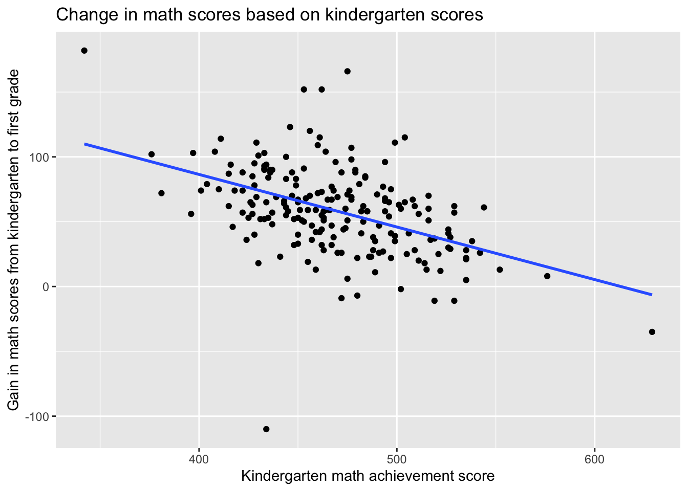
Indeed, that seems to be the case! The linear line of best fit shows a correlation between kindergarten scores and score gain, with students that scored higher in kindergarten having a lower gain from kindergarten to first grade. This makes sense: higher scores leave less room for improvement, while students with initially lower scores have much more potential to improve. However, it could also be possible to have a classroom environment where the teacher is better at supporting already high-achieving students, while lower-achieving students don’t get as much support and therefore improve less.
Is more improvement for initially lower-scoring students a global phenomenon, or is the opposite effect also possible? To begin answering this question, we can try looking at the same plot as above, but this time visualize the different classrooms and add in a trend line for each classroom.
ggplot(SII_toy_data,
aes(x = mathkind, y = mathgain, color = classid)) +
geom_point() +
geom_smooth(method = "lm", se = FALSE) +
labs(title = "Change in math scores based on kindergarten scores",
subtitle = "Grouping by classroom",
x = "Kindergarten math achievement score",
y = "Gain in math scores from kindergarten to first grade") +
theme(legend.position = "none")`geom_smooth()` using formula = 'y ~ x'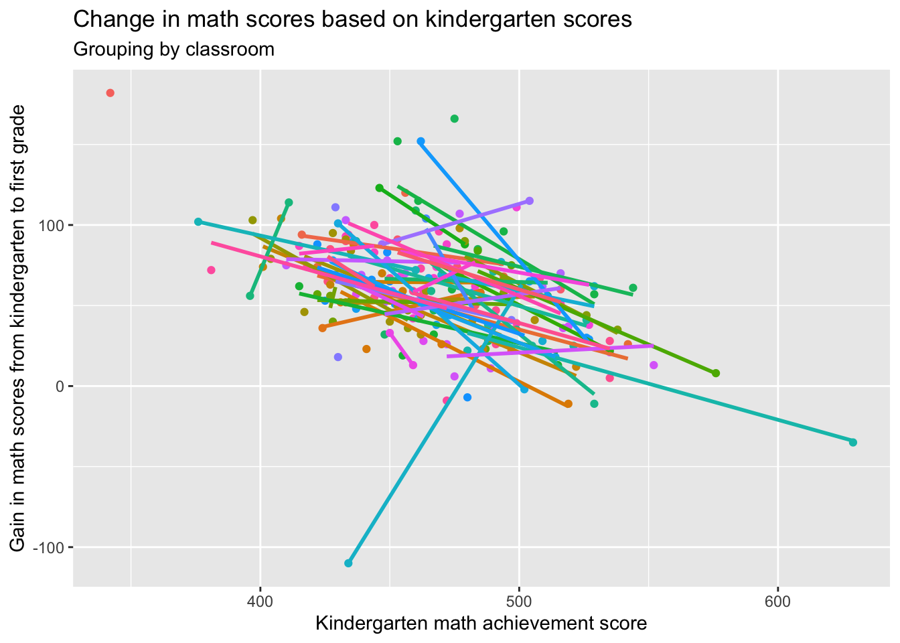
When we group the data this way, the picture that emerges is a bit more complicated: some classrooms still show the overall effect, with lower initial scores being correlated with more score gain. Some classrooms show the effect even more strongly with steeper downwards trend lines. However, some classrooms show the opposite effect: a higher initial score is correlated with more gain. This suggests that the relationship between kindergarten scores and score gain in first grade is not as simple as it may initially seem, and it might depend on some classroom-level variables, such as how effective the teacher is at teaching first grade math.
Another naive hypothesis we might form is that children from higher socioeconomic backgrounds (high SES) might have a higher gain in math scores. Once again, we can explore this hypothesis with a scatter plot in our subset of the data.
ggplot(SII_toy_data, aes(x = ses, y = mathgain)) +
geom_point() +
geom_smooth(method = "lm", se = FALSE) +
labs(title = "Change in math scores based on kindergarten scores",
x = "Socioeconomic status",
y = "Gain in math scores from kindergarten to first grade")`geom_smooth()` using formula = 'y ~ x'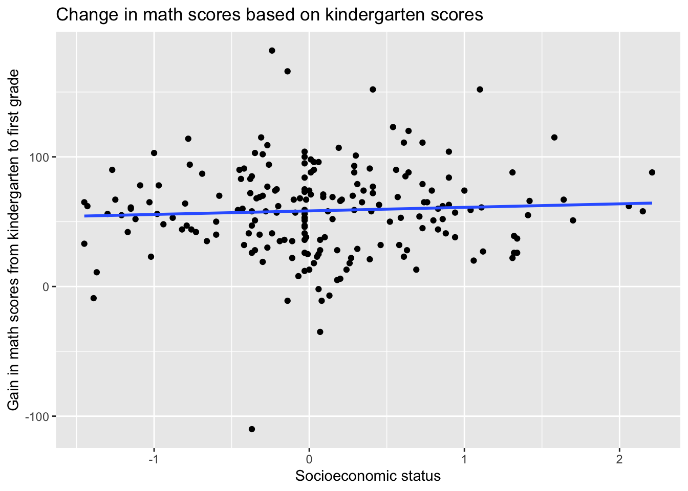
If we plot the score gain against SES within the same subset of the data, however, this doesn’t seem to be the case: the linear trend line for this correlation is basically flat. This might be because there is no correlation between SES and math score gain, but it might also be because the correlation between these factors is variable. For example, it could be that some school districts have more resources to support lower-income students and therefore have more flat or even decreasing trend lines, but in other school districts with less resources lower-income students aren’t able to increase their score as much. Once again, we can begin to uncover this variation by plotting the data with different trend lines for each school.
ggplot(SII_toy_data,
aes(x = ses, y = mathgain, color = schoolid)) +
geom_point() +
labs(title = "Change in math scores based on kindergarten scores",
subtitle = "Grouping by school",
x = "Socioeconomic status",
y = "Gain in math scores from kindergarten to first grade") +
theme(legend.position = "none") +
geom_smooth(method = "lm", se = FALSE)`geom_smooth()` using formula = 'y ~ x'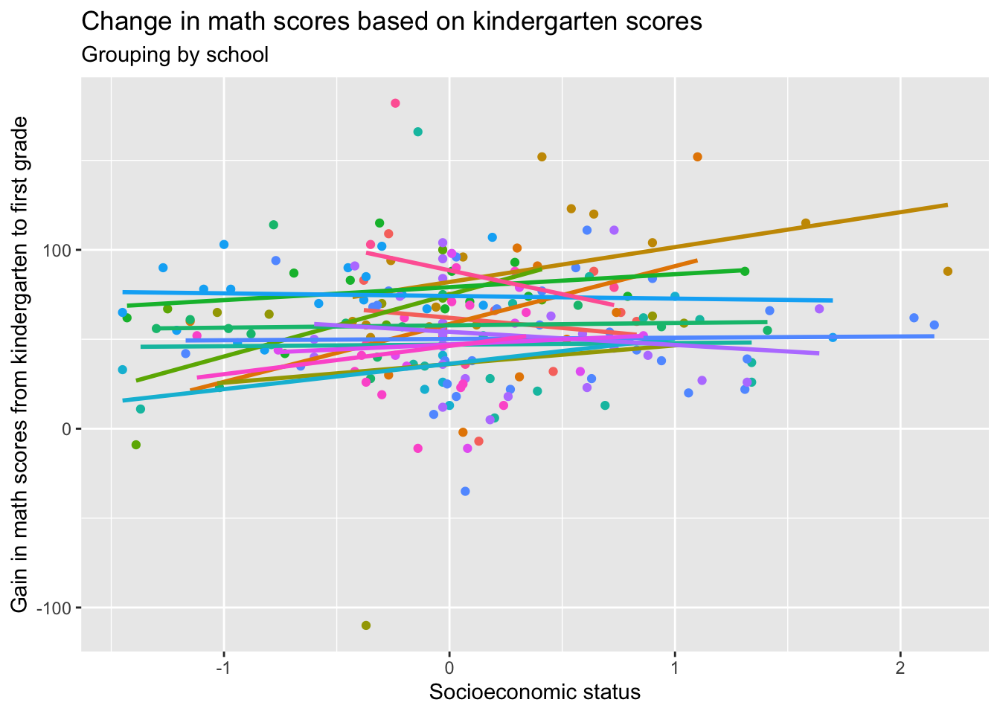
While the overall correlation was pretty flat, plotting the trend lines for each school shows a lot more variation: in some schools SES is positively correlated with score increases, in others the correlation is flat, and in one district the correlation is negative, so that higher income students improve their scores less. Once again, grouping the data revealed substantial variation, this time at the level of the school, which suggests that the relationship between SES and math score gain might be influenced by school-level variables.
These examples illustrate a common issue with using simple linear models to explain relationships in complicated, real-world datasets: simple linear models assume each data point is independent, while in the real world data points are often grouped and interdependent. Simple linear models can’t account for the fact that students in the same classroom are probably more similar than students in different classrooms, and classrooms in the same school are probably more similar than classrooms in different schools. They also can’t account for the variation that exists between groups: each grouping variable (classroom and school) can have different means for each variable and different slopes for relationships between variables.
Mixed effects models allow us to deal with this complexity in a dataset: they are made for dealing with data points that are not independent and are instead clustered or nested. Because of that, they can capture more of the meaningful variation in complex datasets like this and produce much more accurate predictions. Using mixed effects models is preferable when dealing with datasets that feature nested designs (such as the SII dataset we’re using here), repeated measures for each participant, longitudinal data, or generally complex designs.
Manually building a mixed effects model
Starting with a simple linear model
In a simple linear model, a linear correlation is fit to the data and each data point is assumed to be independent, so any variation between groups is assumed to be normally distributed error.
In a subset of the data, we could fit a linear model for the relationship between kindergarten math scores and math score gain. We can use the lm function to fit a simple linear model that predicts math score gain based on kindergarten math scores (mathgain ~ ses); we are assuming that all other variation in the data is random error.
# take a smaller subset (n = 100) for visualization purposes
SII_toy_data <- SII_toy_data %>% slice_head(n = 100)
toy_lm_kind <- lm(mathgain ~ mathkind, data = SII_toy_data)
summary(toy_lm_kind)
Call:
lm(formula = mathgain ~ mathkind, data = SII_toy_data)
Residuals:
Min 1Q Median 3Q Max
-180.472 -16.397 -0.255 15.386 106.609
Coefficients:
Estimate Std. Error t value Pr(>|t|)
(Intercept) 187.7663 47.8021 3.928 0.000159 ***
mathkind -0.2703 0.1023 -2.643 0.009569 **
---
Signif. codes: 0 '***' 0.001 '**' 0.01 '*' 0.05 '.' 0.1 ' ' 1
Residual standard error: 35.73 on 98 degrees of freedom
Multiple R-squared: 0.06654, Adjusted R-squared: 0.05701
F-statistic: 6.985 on 1 and 98 DF, p-value: 0.009569As we expected from the trend line above, the relationship between math score increase and kindergarten math scores is significant and negative: students with higher scores in kindergarten generally improve less by third grade (p < 0.01).
When we plot the model predictions for each of the different classrooms in this subset of the data, we can see how the linear model doesn’t track group-level effects: the slope and intercept (height on the plot) of the trend line is exactly the same for each of the classrooms. This means that the trend lines don’t fit the classroom-level data very well: some of them are too high or too low with respect to the data points, and the slopes don’t match the classroom-level trends well either.
SII_toy_data$pred_lm_kind <- predict(toy_lm_kind)
ggplot(SII_toy_data,
aes(x = mathkind)) +
geom_point(aes(y = mathgain), size=1, alpha=.3) +
facet_wrap(~schoolid) +
geom_line(aes(y=pred_lm_kind), col = "red") +
labs(title = "Linear model fit for each classroom",
subtitle = "mathgain ~ mathkind",
x = "Kindergarten math achievement score",
y = "Gain in math scores from kindergarten to first grade")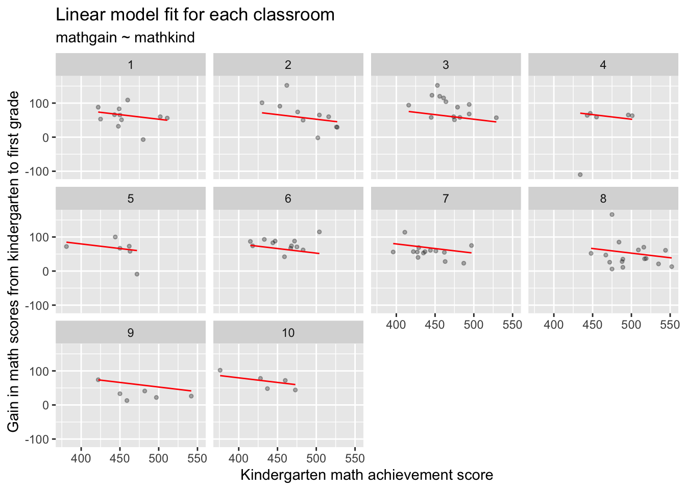
Adding random intercepts
One of the way that mixed effects models can account for variation between grouping variables is by adding random intercepts. Instead of assuming one intercept for the line of best fit across all the data, we can allow the intercept to vary between groups, so that each group has its own intercept (but the same slope). This means that the variance in intercepts (or conceptually, in the average math score gain) between different classrooms is no longer modeled as error, but is instead modeled as a distribution of deviations from the overall mean intercept.
To do this in R, we can use the lmer function from the lmerTest package to fit a mixed effects model that still predicts math score gain based on kindergarten math scores (mathgain ~ mathkind), but this time adds in a term for random intercepts for each classroom (1 | classid). This model has two components:
- Fixed (or constant) effects - population-level effects that persist across groups. In our case, this is the population-level intercept and slope for the effect of kindergarten math scores.
- Random effects - effects that vary for each group and model additional variation as a distribution around the fixed effects. In our case, we are adding in one random effect: random intercepts for each classroom.
toy_intercept_kind <- lmer(mathgain ~ mathkind + (1 | schoolid), data = SII_toy_data)
summary(toy_intercept_kind)Linear mixed model fit by REML. t-tests use Satterthwaite's method [
lmerModLmerTest]
Formula: mathgain ~ mathkind + (1 | schoolid)
Data: SII_toy_data
REML criterion at convergence: 990.3
Scaled residuals:
Min 1Q Median 3Q Max
-4.9892 -0.5209 0.0190 0.4826 3.3163
Random effects:
Groups Name Variance Std.Dev.
schoolid (Intercept) 175.4 13.24
Residual 1118.4 33.44
Number of obs: 100, groups: schoolid, 10
Fixed effects:
Estimate Std. Error df t value Pr(>|t|)
(Intercept) 195.1796 50.2853 92.9179 3.881 0.000194 ***
mathkind -0.2897 0.1076 93.6131 -2.692 0.008415 **
---
Signif. codes: 0 '***' 0.001 '**' 0.01 '*' 0.05 '.' 0.1 ' ' 1
Correlation of Fixed Effects:
(Intr)
mathkind -0.994This model still shows a significant negative relationship between math score increase and kindergarten math scores (p = 0.011). However, it is now also modeling variance in intercepts for each classroom, which accounts for ~18% (231 / (231 + 1065)) of the total variance in the data.
When we visualize the predictions from this model for each classroom, we can notice that the predictions for each classroom still have the same slope but now vary in intercept (height) and capture the differences in average math score gains between classrooms a bit better.
SII_toy_data$pred_intercept_kind <- predict(toy_intercept_kind)
ggplot(SII_toy_data,
aes(x = mathkind)) +
geom_point(aes(y = mathgain), size=1, alpha=.3) +
facet_wrap(~schoolid) +
geom_line(aes(y=pred_intercept_kind), col = "blue") +
labs(title = "Random intercepts fit for each classroom",
subtitle = "mathgain ~ mathkind + (1 | classid)",
x = "Kindergarten math achievement score",
y = "Gain in math scores from kindergarten to first grade")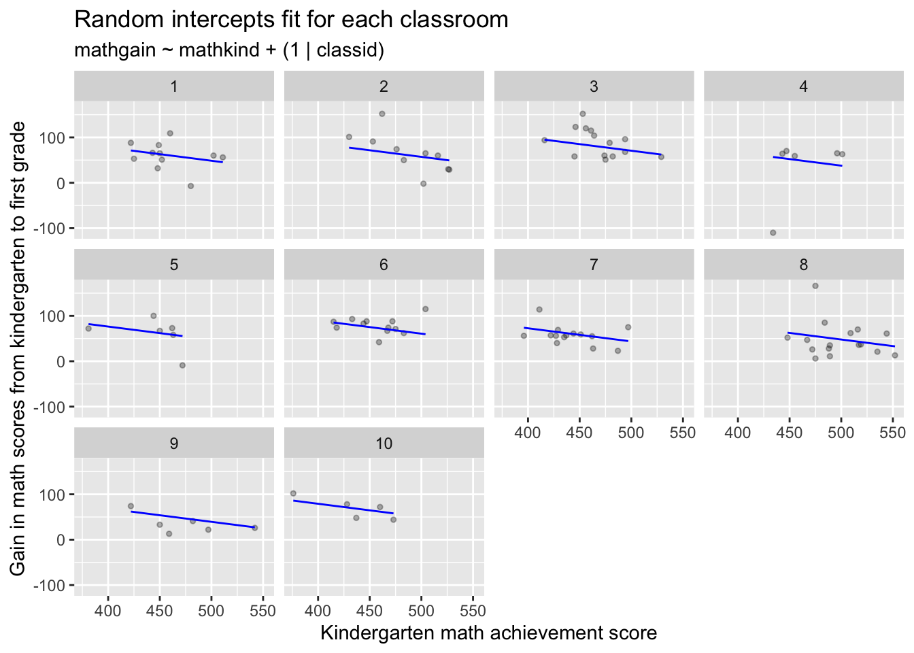
Adding random slopes
The other random effect that we can account for with a mixed effects model is different slopes for each group. Instead of assuming that the slope of the predicted line must be the same across all groups, we can add in a random slopes term and allow the slope to vary between groups. This means that the variance in slopes (conceptually, the relationship between kindergarten scores and score gains) between different classrooms is no longer modeled as an error, but is instead considered a distribution of deviations from the overall population-level slope.
We can add this change to our previous model, so that now each group has both its own intercept and its own slope. With the lmer package, we can now fit a mixed effects model that predicts math score gain based on kindergarten math scores (mathgain ~ mathkind) and adds in terms for random intercepts for each classroom (1 | classid) and random slopes for the effect of kindergarten math scores by classroom (mathkind | classid), which are combined into (1 + mathkind | classid).
toy_intercept_slopes_kind <- lmer(mathgain ~ mathkind + (1 + mathkind | schoolid), data = SII_toy_data)boundary (singular) fit: see help('isSingular')summary(toy_intercept_slopes_kind)Linear mixed model fit by REML. t-tests use Satterthwaite's method [
lmerModLmerTest]
Formula: mathgain ~ mathkind + (1 + mathkind | schoolid)
Data: SII_toy_data
REML criterion at convergence: 989.6
Scaled residuals:
Min 1Q Median 3Q Max
-4.9218 -0.5069 0.0124 0.4703 3.3255
Random effects:
Groups Name Variance Std.Dev. Corr
schoolid (Intercept) 1.109e+03 33.30499
mathkind 1.917e-03 0.04379 -1.00
Residual 1.112e+03 33.35262
Number of obs: 100, groups: schoolid, 10
Fixed effects:
Estimate Std. Error df t value Pr(>|t|)
(Intercept) 195.8090 50.5916 56.7392 3.87 0.000283 ***
mathkind -0.2909 0.1069 91.2390 -2.72 0.007817 **
---
Signif. codes: 0 '***' 0.001 '**' 0.01 '*' 0.05 '.' 0.1 ' ' 1
Correlation of Fixed Effects:
(Intr)
mathkind -0.994
optimizer (nloptwrap) convergence code: 0 (OK)
boundary (singular) fit: see help('isSingular')Once again, this model shows a significant negative relationship between math score increase and kindergarten math scores (p < 0.01). This model is still modeling variance in intercepts for each classroom, which accounts for ~50% (1109 / (1109 + 1112 + 0.001917)) of the total variance, and is now also modeling variance in slopes for each classrooms, which doesn’t actually account for much of the variance (< 0.0001%). This means that adding random slopes didn’t do too much to improve model fit.
We can still visualize the predictions from this model for each classroom, but because the random slopes didn’t account for a lot of the variance we can’t really see noticeable differences in slopes between each classroom. However, if the addition of random slopes was more impactful, we would be able to see that the predictions for each classroom not only vary in intercept (height) but also in slopes to capture the spread of the data a bit better.
SII_toy_data$pred_intercept_slopes_kind <- predict(toy_intercept_slopes_kind)
ggplot(SII_toy_data,
aes(x = mathkind)) +
geom_point(aes(y = mathgain), size=1, alpha=.3) +
facet_wrap(~schoolid) +
geom_line(aes(y=pred_intercept_slopes_kind), col = "orange") +
labs(title = "Random intercepts + slopes fit for each classroom",
subtitle = "mathgain ~ mathkind + (1 + mathkind | classid)",
x = "Kindergarten math achievement score",
y = "Gain in math scores from kindergarten to first grade")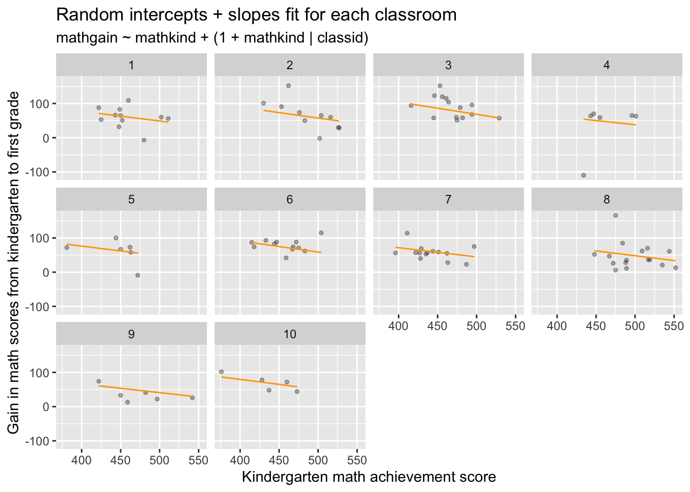
Mixed effects modeling in R
Now that we know the added features of mixed effects models, random effects (random intercepts and random slopes), we can go over how to implement mixed effects modeling in R. In this tutorial, we’ll be using the lmerTest package to implement all mixed effects models. The general workflow for modeling data with mixed effects models is:
- Exploring relationships between variables
- Implementing model(s)
- Model comparison
- Interpreting model outputs
Let’s go through these steps one by one.
Exploring relationships between variables
Visualizing data is always a helpful first step before doing statistical modeling. In our case, without any a priori hypotheses or analysis plan, visualizing the data and relationships between variables also helps us determine what variables should be included in our statistical models.
One helpful visualization (that we’ve already used above) during data exploration is a scatterplot, which we can use to understand the relationships between continuous variables. Since we’re interested in modeling the gain in math scores between kindergarten and first grade, we can create scatterplots with the mathgain variable on the y axis and other continuous variables on the x axis. Let’s start with kindergarten math scores (mathkind), this time looking at the full sample instead of a subset.
ggplot(SIIdata, aes(x = mathkind, y = mathgain)) +
geom_point() +
labs(x = "Kindergarten math achievement score",
y = "Gain in math scores from kindergarten to first grade")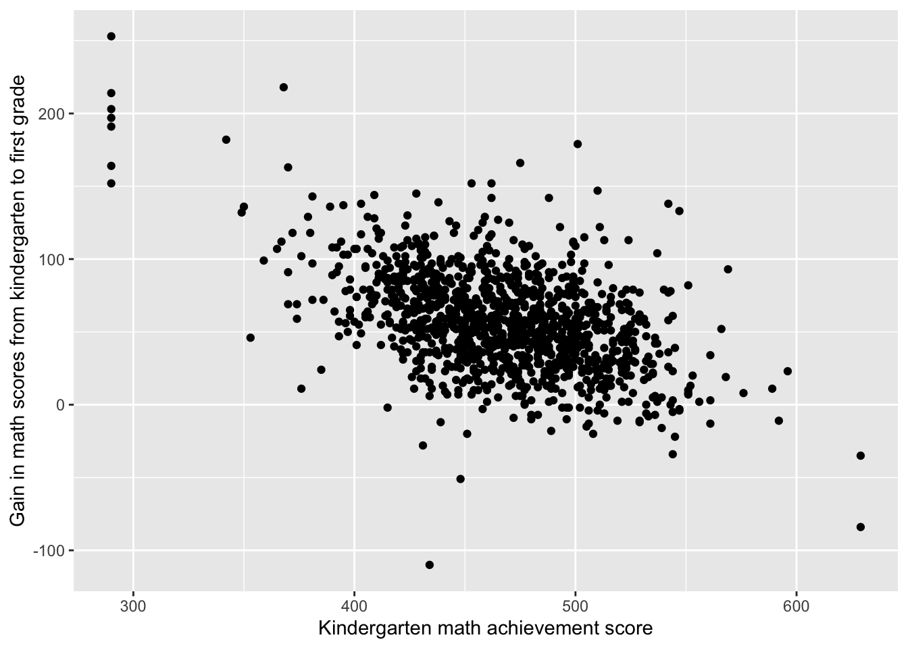
From this, we can see that the full sample has a fairly even spread in both math gain scores and in kindergarten scores (with the exception of some very low potential outlier values for kindergarten scores). The two variables still seem to be negatively correlated in the full sample, which means kindergarten scores are likely a useful variable to include in our models.
ggplot(SIIdata, aes(x = ses, y = mathgain)) +
geom_point() +
labs(x = "Socioeconomic status",
y = "Gain in math scores from kindergarten to first grade")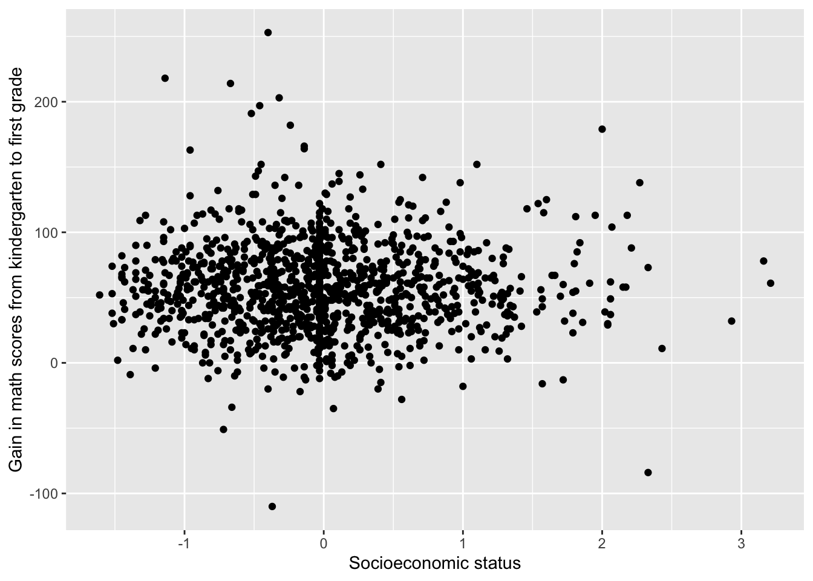
We can also look at SES. In the full sample, there still doesn’t seem to be a strong relationship between SES and score gain.
ggplot(SIIdata, aes(x = yearstea, y = mathgain)) +
geom_point() +
labs(x = "Teacher's years of teaching experience",
y = "Gain in math scores from kindergarten to first grade")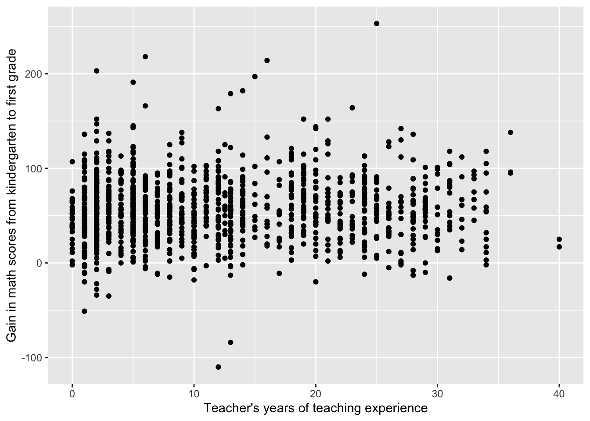
ggplot(SIIdata, aes(x = mathknow, y = mathgain)) +
geom_point() +
labs(x = "Teacher's math knowledge",
y = "Gain in math scores from kindergarten to first grade")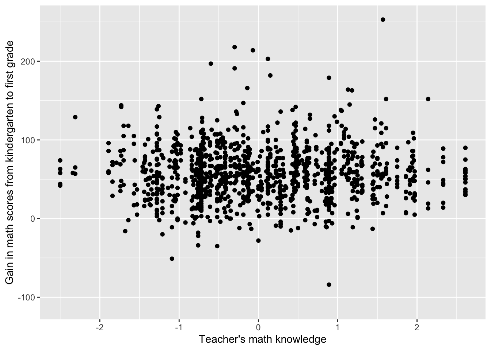
ggplot(SIIdata, aes(x = mathprep, y = mathgain)) +
geom_point() +
labs(x = "Teacher's math prep courses",
y = "Gain in math scores from kindergarten to first grade")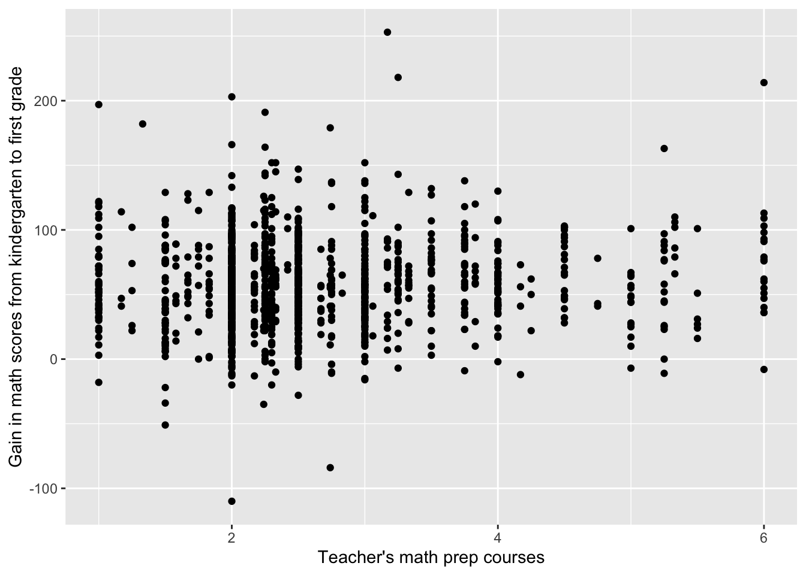
When we look at classroom-level variables, we don’t observe any noticeable correlations between gain in math scores and the teacher’s years of teaching experience, level of math knowledge, or amount of math courses they follow. Based on this, these variables might be excluded from our statistical models for the sake of simplicity.
ggplot(SIIdata, aes(x = housepov, y = mathgain)) +
geom_point() +
labs(x = "Percentage of houses below poverty level in school neighborhood",
y = "Gain in math scores from kindergarten to first grade")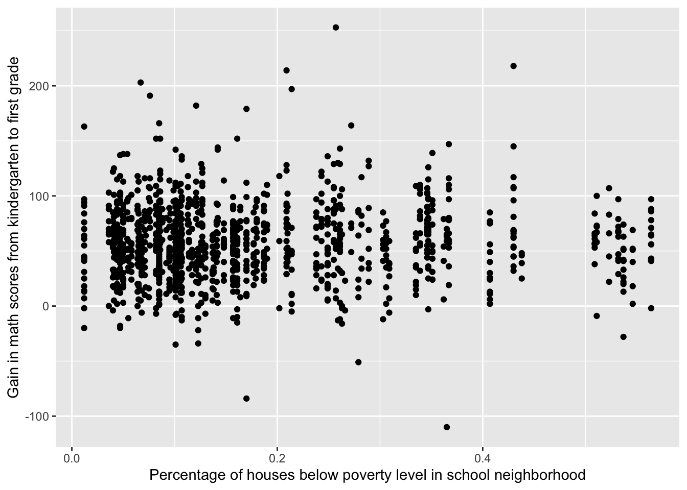
The final variable we can explore with a scatterplot is the percentage of houses below poverty level in school neighborhood (housepov), which is a school-level variable.
Some of the other predictor variables are not continuous but rather categorical factors and can’t be visualized with scatterplots. For these, we can visualize their relationship with mathgain using plots that show the data distribution for each category, such as violin plots.
ggplot(SIIdata, aes(x = sex, y = mathgain)) +
geom_violin() +
labs(x = "Student's sex",
y = "Gain in math scores from kindergarten to first grade")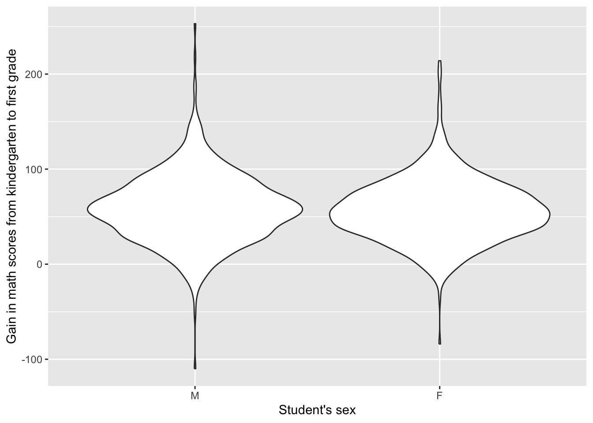
ggplot(SIIdata, aes(x = minority, y = mathgain)) +
geom_violin() +
labs(x = "Student's minority status",
y = "Gain in math scores from kindergarten to first grade")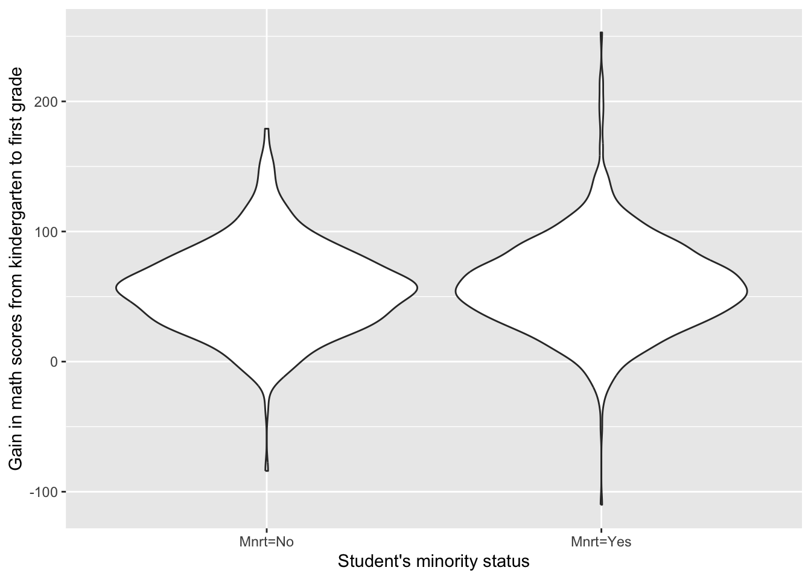
The two categorical student-level variables, sex and minority status seem to correlate with score gain a bit, since the distributions look slightly wider and have lower means for the female and minority students.
Now that we’ve visualized some of the variance in our data, we can move on to building mixed effects models to model our data.
Implementing different models
In order to implement a mixed effects model, we need to decide which fixed and random effects to include in our model structure. The fixed effects represent individual predictors, while random effects reflect effects at the group (classroom or school) level.
In our case, we can build a model that predicts the gain in math scores from all student-level predictors (sex, minority status, kindergarten math scores, and SES), the school-level predictor of percentage of households under the poverty level, and one classroom-level predictor that we think might make an impact: years of teaching experience for the classroom teacher. If we assume each of these predictors acts independently, the fixed effects for our model are sex + minority + mathkind + ses + housepov + yearstea.
We can also add in random intercepts for both of the grouping levels we have in our dataset, classrooms and schools, since we expect each to have different baseline levels of gain in math scores. That means that the random effects structure for our first model is (1 | classid) + (1 | schoolid).
Altogether, this first mixed effects model predicts gain in math scores from the combination of fixed and random effects: mathgain ~ sex + minority + mathkind + ses + housepov + yearstea + (1 | classid) + (1 | schoolid). We can call it like so using the lmer function:
model1 <- lmer(mathgain ~ sex + minority + mathkind + ses + housepov + yearstea
+ (1 | classid) + (1 | schoolid),
data = SIIdata)We can then use the summary() function to see the model output.
summary(model1)Linear mixed model fit by REML. t-tests use Satterthwaite's method [
lmerModLmerTest]
Formula: mathgain ~ sex + minority + mathkind + ses + housepov + yearstea +
(1 | classid) + (1 | schoolid)
Data: SIIdata
REML criterion at convergence: 11380.4
Scaled residuals:
Min 1Q Median 3Q Max
-5.7859 -0.6126 -0.0295 0.5554 4.2757
Random effects:
Groups Name Variance Std.Dev.
classid (Intercept) 82.23 9.068
schoolid (Intercept) 77.31 8.793
Residual 734.71 27.106
Number of obs: 1190, groups: classid, 312; schoolid, 107
Fixed effects:
Estimate Std. Error df t value Pr(>|t|)
(Intercept) 284.19767 11.16291 1138.35537 25.459 < 2e-16 ***
sexF -1.22060 1.65820 1125.34746 -0.736 0.46182
minorityMnrt=Yes -7.72157 2.38627 643.38184 -3.236 0.00128 **
mathkind -0.47070 0.02229 1172.24771 -21.118 < 2e-16 ***
ses 5.23075 1.24542 1170.24409 4.200 2.87e-05 ***
housepov -10.95369 9.98022 120.72050 -1.098 0.27459
yearstea 0.05390 0.11236 250.83188 0.480 0.63183
---
Signif. codes: 0 '***' 0.001 '**' 0.01 '*' 0.05 '.' 0.1 ' ' 1
Correlation of Fixed Effects:
(Intr) sexF mnrM=Y mthknd ses houspv
sexF -0.045
mnrtyMnrt=Y -0.266 -0.015
mathkind -0.959 -0.031 0.154
ses 0.124 0.018 0.144 -0.165
housepov -0.185 -0.007 -0.180 0.036 0.077
yearstea -0.158 0.018 0.032 0.012 -0.013 0.097From this, we can see that the random effects we added account for some amount of the variance, and that we have significant effects of minority status, math scores from kindergarten, and socioeconomic status on the gain in math scores.
We could complicate this model a bit if we have reason to believe that the slopes for some effects could also vary by group. For instance, we might think that the relationship between kindergarten scores and score gain might depend on classroom-level effects, such as teacher characteristics. We could also think that the relationship between SES and math gain could vary between schools. To add these hypotheses to our model, we need to add random slopes for these predictors, which means that our full random effects structure is (1 + mathkind | classid) + (1 + ses | schoolid). We can implement and summarize this second model using the following syntax:
model2 <- lmer(mathgain ~ sex + minority + mathkind + yearstea + ses + housepov
+ (1 + mathkind | classid) + (1 + ses| schoolid),
data = SIIdata)
summary(model2)Linear mixed model fit by REML. t-tests use Satterthwaite's method [
lmerModLmerTest]
Formula: mathgain ~ sex + minority + mathkind + yearstea + ses + housepov +
(1 + mathkind | classid) + (1 + ses | schoolid)
Data: SIIdata
REML criterion at convergence: 11466.9
Scaled residuals:
Min 1Q Median 3Q Max
-5.6821 -0.6148 -0.0167 0.5646 4.4779
Random effects:
Groups Name Variance Std.Dev. Corr
classid (Intercept) 8.219e+02 28.66935
mathkind 3.784e-03 0.06151 -0.95
schoolid (Intercept) 8.206e+02 28.64644
ses 7.549e+01 8.68838 0.23
Residual 6.507e+02 25.50977
Number of obs: 1190, groups: classid, 312; schoolid, 107
Fixed effects:
Estimate Std. Error df t value Pr(>|t|)
(Intercept) 290.62974 12.28992 545.79504 23.648 < 2e-16 ***
sexF -1.37323 1.61614 1174.05385 -0.850 0.39567
minorityMnrt=Yes -8.39492 2.69508 920.40207 -3.115 0.00190 **
mathkind -0.48242 0.02289 838.89111 -21.078 < 2e-16 ***
yearstea 0.01731 0.12628 207.45127 0.137 0.89113
ses 5.34095 1.57177 65.75880 3.398 0.00116 **
housepov -13.47967 21.27237 113.63345 -0.634 0.52757
---
Signif. codes: 0 '***' 0.001 '**' 0.01 '*' 0.05 '.' 0.1 ' ' 1
Correlation of Fixed Effects:
(Intr) sexF mnrM=Y mthknd yearst ses
sexF -0.045
mnrtyMnrt=Y -0.228 0.001
mathkind -0.888 -0.025 0.114
yearstea -0.158 0.023 0.008 0.012
ses 0.126 0.005 0.073 -0.122 -0.012
housepov -0.339 -0.008 -0.095 0.015 0.054 0.018
optimizer (nloptwrap) convergence code: 0 (OK)
unable to evaluate scaled gradient
Model failed to converge: degenerate Hessian with 2 negative eigenvalues
See ?lme4::convergence and ?lme4::troubleshooting.However, here we run into one of our first issues with mixed effects models: they can fail to converge if the random effects structure is too complicated. To fix this issue, we can remove one of the random slopes we added in to make the model simpler. In order to make this decision, we remove the random slope that had the smallest effect on the residuals, which in this case is the random slope for kindergarten scores by classroom (mathkind).
model2 <- lmer(mathgain ~ sex + minority + mathkind + yearstea + ses + housepov
+ (1 | classid) + (1 + ses| schoolid),
data = SIIdata)
summary(model2)Linear mixed model fit by REML. t-tests use Satterthwaite's method [
lmerModLmerTest]
Formula: mathgain ~ sex + minority + mathkind + yearstea + ses + housepov +
(1 | classid) + (1 + ses | schoolid)
Data: SIIdata
REML criterion at convergence: 11379.1
Scaled residuals:
Min 1Q Median 3Q Max
-5.8481 -0.6103 -0.0224 0.5628 4.2746
Random effects:
Groups Name Variance Std.Dev. Corr
classid (Intercept) 80.730 8.985
schoolid (Intercept) 82.337 9.074
ses 7.194 2.682 0.72
Residual 731.129 27.039
Number of obs: 1190, groups: classid, 312; schoolid, 107
Fixed effects:
Estimate Std. Error df t value Pr(>|t|)
(Intercept) 284.05953 11.14025 1132.45564 25.498 < 2e-16 ***
sexF -1.19312 1.65454 1116.01940 -0.721 0.470986
minorityMnrt=Yes -7.32591 2.41303 605.68658 -3.036 0.002501 **
mathkind -0.47186 0.02224 1162.45333 -21.214 < 2e-16 ***
yearstea 0.06054 0.11216 250.62232 0.540 0.589812
ses 5.19026 1.29153 71.75479 4.019 0.000143 ***
housepov -9.30493 9.94049 121.70825 -0.936 0.351094
---
Signif. codes: 0 '***' 0.001 '**' 0.01 '*' 0.05 '.' 0.1 ' ' 1
Correlation of Fixed Effects:
(Intr) sexF mnrM=Y mthknd yearst ses
sexF -0.044
mnrtyMnrt=Y -0.264 -0.016
mathkind -0.958 -0.031 0.150
yearstea -0.158 0.019 0.026 0.013
ses 0.135 0.019 0.121 -0.156 -0.018
housepov -0.185 -0.011 -0.183 0.035 0.102 0.064This model with both random intercepts and random slopes converges, and once again shows a reduction in residual variance through the random effects and significant main effects of minority status, kindergarten math scores, and SES.
But what if we don’t think that each of the fixed effects predictors has an independent effect? For instance, we might think that the relationship between kingergarten scores and gain in math scores depends on the years of teaching experience that the teacher has, or that the effect of SES on score gain is moderated by the poverty level in the notebook. In order to implement this, we can add interactions to our fixed effects: an interaction between kindergarten scores and years of teaching experience, mathkind * yearstea, and an interaction between SES and neighborhood poverty levels, ses * housepov. We don’t need to specify the fixed effects for each of these variables separately, since the syntax for interaction effects also allows us to calculate the independent effects. With this addition, our third model can be called like this:
model3 <- lmer(mathgain ~ sex + minority + mathkind * yearstea + ses * housepov
+ (1 | classid) + (1 + ses | schoolid),
data = SIIdata)
summary(model3)Linear mixed model fit by REML. t-tests use Satterthwaite's method [
lmerModLmerTest]
Formula: mathgain ~ sex + minority + mathkind * yearstea + ses * housepov +
(1 | classid) + (1 + ses | schoolid)
Data: SIIdata
REML criterion at convergence: 11381.8
Scaled residuals:
Min 1Q Median 3Q Max
-5.8720 -0.5999 -0.0206 0.5658 4.2650
Random effects:
Groups Name Variance Std.Dev. Corr
classid (Intercept) 81.037 9.002
schoolid (Intercept) 80.601 8.978
ses 4.664 2.160 0.95
Residual 733.219 27.078
Number of obs: 1190, groups: classid, 312; schoolid, 107
Fixed effects:
Estimate Std. Error df t value Pr(>|t|)
(Intercept) 2.806e+02 1.723e+01 1.161e+03 16.286 < 2e-16 ***
sexF -1.245e+00 1.657e+00 1.114e+03 -0.751 0.45257
minorityMnrt=Yes -7.229e+00 2.411e+00 6.022e+02 -2.998 0.00283 **
mathkind -4.640e-01 3.566e-02 1.165e+03 -13.012 < 2e-16 ***
yearstea 3.563e-01 1.016e+00 1.138e+03 0.350 0.72603
ses 7.122e+00 2.076e+00 6.309e+01 3.430 0.00107 **
housepov -1.164e+01 1.016e+01 1.173e+02 -1.146 0.25427
mathkind:yearstea -6.310e-04 2.164e-03 1.140e+03 -0.292 0.77067
ses:housepov -1.110e+01 9.387e+00 1.010e+02 -1.183 0.23966
---
Signif. codes: 0 '***' 0.001 '**' 0.01 '*' 0.05 '.' 0.1 ' ' 1
Correlation of Fixed Effects:
(Intr) sexF mnrM=Y mthknd yearst ses houspv mthkn:
sexF -0.044
mnrtyMnrt=Y -0.176 -0.017
mathkind -0.983 -0.004 0.099
yearstea -0.769 0.021 0.010 0.778
ses 0.085 -0.016 0.085 -0.080 -0.008
housepov -0.165 -0.002 -0.181 0.068 0.065 -0.139
mthknd:yrst 0.762 -0.019 -0.007 -0.781 -0.994 0.007 -0.055
ses:housepv -0.035 0.035 -0.012 0.021 0.004 -0.788 0.226 -0.005
fit warnings:
Some predictor variables are on very different scales: consider rescaling.
You may also use (g)lmerControl(autoscale = TRUE) to improve numerical stability.Once again, this model shows some of the residual variance being accounted for by the random effects and significant main effects of minority status, kindergarten math scores, and SES. Neither of the interactions we added, however, were significant.
Model comparison
Now that we know how to implement mixed effects models, we’re left with the very important question of how to choose which model fits the data the best. As you’ve seen above, we can create several different models to predict one outcome with the same set of predictors in a complex dataset like this one. How do we know which one to use?
One way to resolve this issue is to specify the model ahead of time, before running the analysis, based on your hypotheses (for example, in a preregistration). However, even prespecified models might fail to converge, or you might need to justify using a more complex or simpler model than a different option you might have chosen.
To help in our decision-making, we can use the test_likelihoodratio function from the easystats package, which performs a likelihood ratio test to test which model is a better (more likely) explanation for the data. Crucially, however, this test only works on nested models, which means that all the predictors for one model (the smaller one) should be present in the bigger model.
Let’s use this test to compare two of the models we created earlier: one with just random intercepts by classroom and school (model1) and one with an added random slope for SES by school (model 2).
test_likelihoodratio(model1, model2, estimator = "REML")Some of the nested models seem to be identical and probably only vary in
their random effects.# Likelihood-Ratio-Test (LRT) for Model Comparison (REML-estimator)
Name | Model | df | df_diff | Chi2 | p
------------------------------------------------------
model1 | lmerModLmerTest | 10 | | |
model2 | lmerModLmerTest | 12 | 2 | 1.23 | 0.540Here, we are using the REML estimator, since the models we are comparing only differ in random effects structure but have identical fixed effects structure. The likelihood ratio test indicates that the addition of random slopes by school for SES did not significantly improve model fit (p = 0.540). That means we can drop the random slope and just use the model with the random intercepts.
We can also compare our model1 to slightly more complex models that keep the same random effects structure but include interactions for in the fixed effects.
Let’s create a model4 with an interaction between mathkind and yearstea, a model5 with an interaction between ses and housepov, and a model6 with both interaction terms.
model4 <- lmer(mathgain ~ sex + minority + mathkind * yearstea + ses + housepov
+ (1 | classid) + (1 | schoolid),
data = SIIdata)
model5 <- lmer(mathgain ~ sex + minority + mathkind + yearstea + ses * housepov
+ (1 | classid) + (1 | schoolid),
data = SIIdata)
model6 <- lmer(mathgain ~ sex + minority + mathkind * yearstea + ses * housepov
+ (1 | classid) + (1 | schoolid),
data = SIIdata)We can now compare all of these models to model1 using the likelihood ratio test, this time with the ML estimator since we are comparing models with the same random effects but different fixed effects.
test_likelihoodratio(model1, model4, estimator = "ML")# Likelihood-Ratio-Test (LRT) for Model Comparison (ML-estimator)
Name | Model | df | df_diff | Chi2 | p
------------------------------------------------------
model1 | lmerModLmerTest | 10 | | |
model4 | lmerModLmerTest | 11 | 1 | 0.10 | 0.748test_likelihoodratio(model1, model5, estimator = "ML")# Likelihood-Ratio-Test (LRT) for Model Comparison (ML-estimator)
Name | Model | df | df_diff | Chi2 | p
------------------------------------------------------
model1 | lmerModLmerTest | 10 | | |
model5 | lmerModLmerTest | 11 | 1 | 1.35 | 0.246test_likelihoodratio(model1, model6, estimator = "ML")# Likelihood-Ratio-Test (LRT) for Model Comparison (ML-estimator)
Name | Model | df | df_diff | Chi2 | p
------------------------------------------------------
model1 | lmerModLmerTest | 10 | | |
model6 | lmerModLmerTest | 12 | 2 | 1.45 | 0.485Through this, we can see that none of the added interaction effects served to significantly improve our model, so model1, out of all the models we explored, seems to provide the best fit to our data.
Interpreting model outputs
Now that we have our best-fitting model, how do we interpret its outputs? Let’s take a look at the model summary again:
summary(model1)Linear mixed model fit by REML. t-tests use Satterthwaite's method [
lmerModLmerTest]
Formula: mathgain ~ sex + minority + mathkind + ses + housepov + yearstea +
(1 | classid) + (1 | schoolid)
Data: SIIdata
REML criterion at convergence: 11380.4
Scaled residuals:
Min 1Q Median 3Q Max
-5.7859 -0.6126 -0.0295 0.5554 4.2757
Random effects:
Groups Name Variance Std.Dev.
classid (Intercept) 82.23 9.068
schoolid (Intercept) 77.31 8.793
Residual 734.71 27.106
Number of obs: 1190, groups: classid, 312; schoolid, 107
Fixed effects:
Estimate Std. Error df t value Pr(>|t|)
(Intercept) 284.19767 11.16291 1138.35537 25.459 < 2e-16 ***
sexF -1.22060 1.65820 1125.34746 -0.736 0.46182
minorityMnrt=Yes -7.72157 2.38627 643.38184 -3.236 0.00128 **
mathkind -0.47070 0.02229 1172.24771 -21.118 < 2e-16 ***
ses 5.23075 1.24542 1170.24409 4.200 2.87e-05 ***
housepov -10.95369 9.98022 120.72050 -1.098 0.27459
yearstea 0.05390 0.11236 250.83188 0.480 0.63183
---
Signif. codes: 0 '***' 0.001 '**' 0.01 '*' 0.05 '.' 0.1 ' ' 1
Correlation of Fixed Effects:
(Intr) sexF mnrM=Y mthknd ses houspv
sexF -0.045
mnrtyMnrt=Y -0.266 -0.015
mathkind -0.959 -0.031 0.154
ses 0.124 0.018 0.144 -0.165
housepov -0.185 -0.007 -0.180 0.036 0.077
yearstea -0.158 0.018 0.032 0.012 -0.013 0.097The random effects portion of the model output shows us how much variance each random effect accounts for. Here, we can see that both of our group random intercepts account for a good amount of the variance in the model, but there is still substantial residual variance.
The fixed effects portion of the model output shows the estimate, standard error, and p values for each of our fixed effects coefficients. For a continuous predictor, like kindergarten math scores, we can interpret the estimate as showing us the estimated change in our outcome (gain in math scores) based on a one-unit increase in the predictor: in this case, scoring one more point in kindergarten predicts -0.47 less points of gain by first grade. For a categorical predictor, like minority status, the estimate shows the estimated change in the outcome for a certain predictor category relative to the reference category. For minority status, the reference level is “no”, so we can interpret the estimate as showing that minority students on average have 7.72 less points of math score gains compared to non-minority students. By looking at the p values, we can understand which of our predictors were significant: in this case, minority status, kindergarten scores, and SES all significantly predict the gain in scores between kindergarten and first grade.
Conclusion
In this tutorial, we learned what linear mixed effects models are, when and why we need to use them, how random effects work, and how to implement statistical analyses with linear mixed effects models in R, using the SII dataset of student math scores as an example.
Linear mixed effects models are a powerful statistical tool, especially for complex datasets with nesting structure or repeated measurements, and learning how to implement them is helpful for performing analyses in complex datasets. While powerful, these models still operate within the frequentist framework and have several of the limitations associated with linear regression, so depending on your research questions and design, alternative methods like hierarchical Bayesian models might be more appropriate.
References
Hill, Heather C., Brian Rowan, and Deborah Loewenberg Ball. 2005. “Effects of Teachers’ Mathematical Knowledge for Teaching on Student Achievement.” American Educational Research Journal 42 (2): 371–406. https://doi.org/10.3102/00028312042002371.